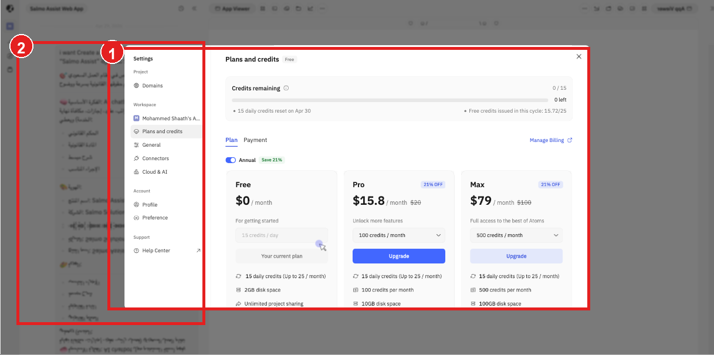
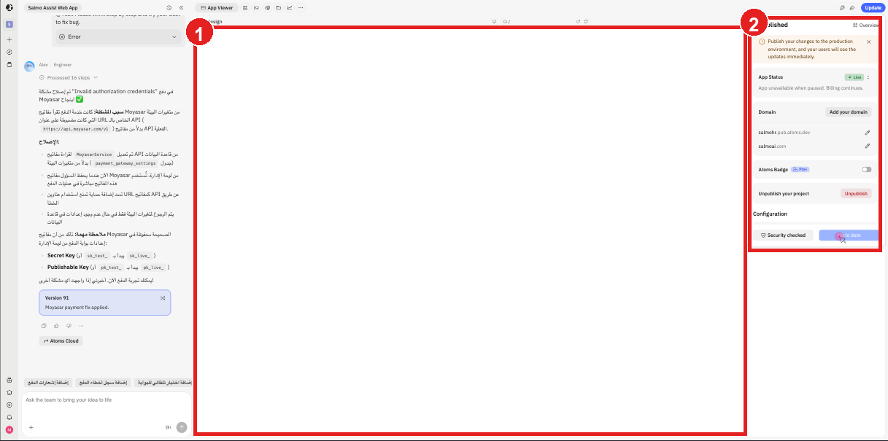
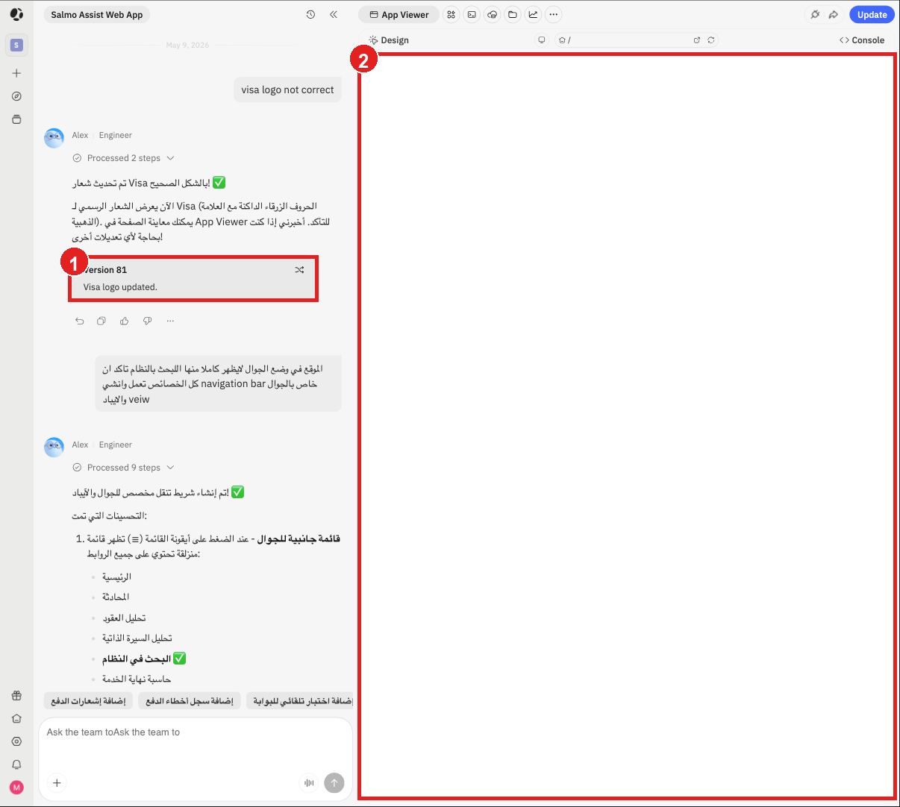
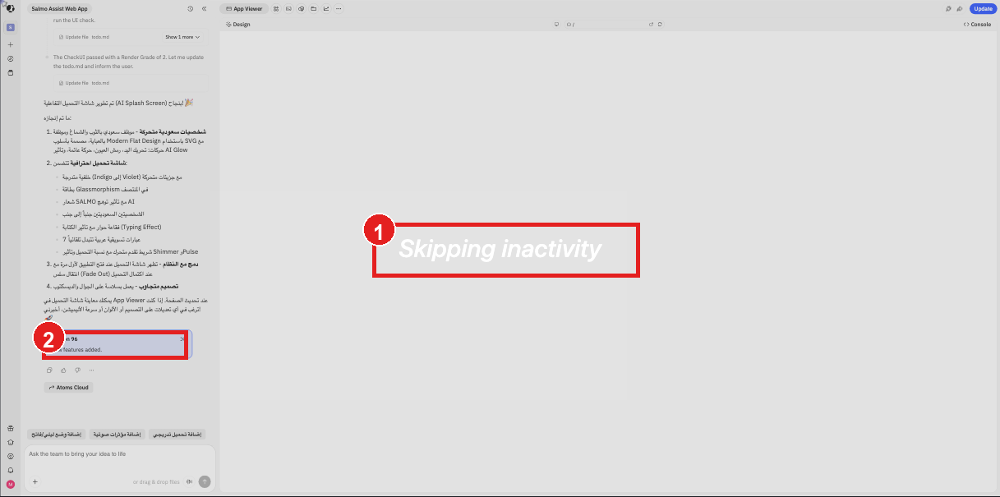

1
Step 01 · Frame
Define one decision
Start with a question the research should help answer. This prevents a generic chronological summary.
Review this user’s sessions and determine why they repeatedly return, republish, and check the live result.
Turning fragmented session evidence into a structured case with traceable findings and prioritized product actions.
The user’s willingness to build, pay, and return was already established. The risk appeared later, when version, live, and preview states stopped agreeing.
Topics frame the research. Steps describe the method. Evidence and output show what the method produced.
What this module explains
The agent was asked to determine why a serious builder repeatedly returned, republished, and checked the live product—even after the interface reported success.
These five steps are one analysis sequence. They move from a focused question to evidence-backed product action.
Start with a question the research should help answer. This prevents a generic chronological summary.
The agent establishes intent, technical behavior, product history, and session timeline. That separates a serious builder from a casual first-day visitor.
One confusing moment can be noise. Repetition across days, versions, and short revisit sessions is much stronger evidence.
Each finding pairs a screenshot with what to notice and what the observation may mean. Facts and interpretation remain separate.
The final output is not a transcript. It is a decision-ready artifact: concise conclusion, traceable evidence, and a small number of prioritized recommendations.
What the workflow produced
Each visual answers three questions: what happened, where to look, and why the moment matters.

EVIDENCE 01 · TASK INTERRUPTIONThe plan and credit layer occupies the central workspace while the unfinished product remains visible behind it.

EVIDENCE 02 · STATUS MISMATCHThe interface reports a live version, but the main preview remains blank. The user receives a success label without a perceptible outcome.

EVIDENCE 03 · VERSION WITHOUT PROOFThe agent reports that a new version was created, yet the visual layer does not confirm that the change is available or correct.

EVIDENCE 04 · EXPLAIN THE BLANK“Skipping inactivity” describes the recording, not whether the product is loading, outdated, unavailable, or successfully deployed.
What the team should do next
The user kept building, paying, and returning. The highest-impact improvements sit in the later delivery loop.
Separate local changes, version generation, live deployment, and preview synchronization into visible states.
Keep capacity information accessible without repeatedly taking over the main workspace.
When a preview is unavailable, identify whether it is loading, inactive, outdated, or blocked by an error.
What you can take away
The instruction forces the output to remain evidence-backed and useful for product decisions.
Review the supplied user sessions and product context. Identify repeated behaviors, moments of friction, and evidence that supports each conclusion. Separate observed facts from interpretation. Prioritize the findings by user impact and recommend specific product actions.